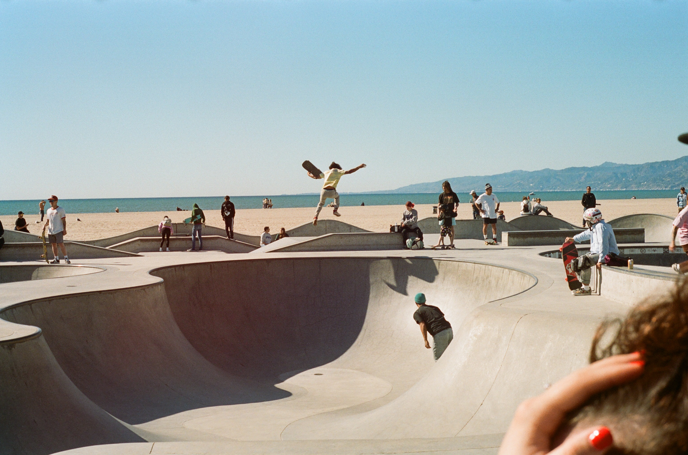
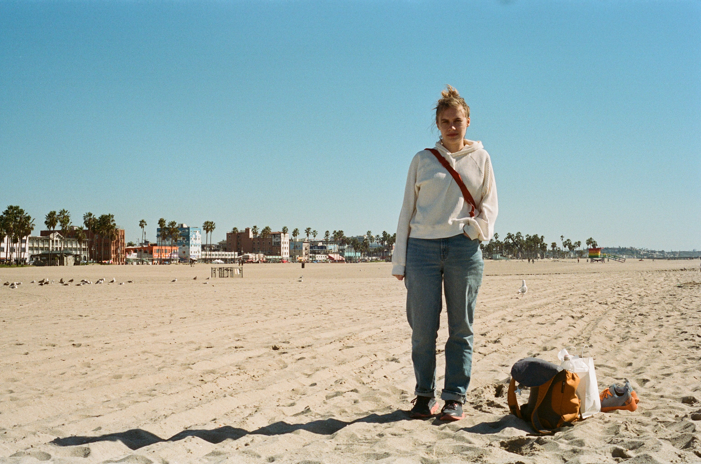
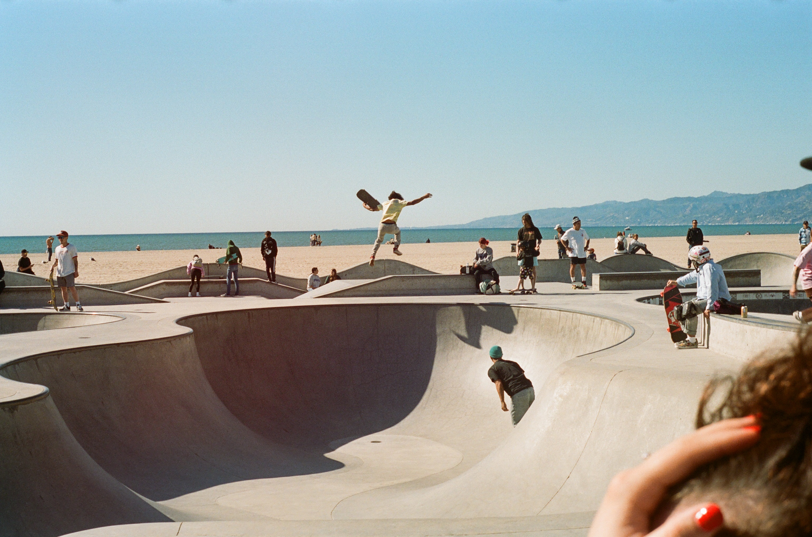
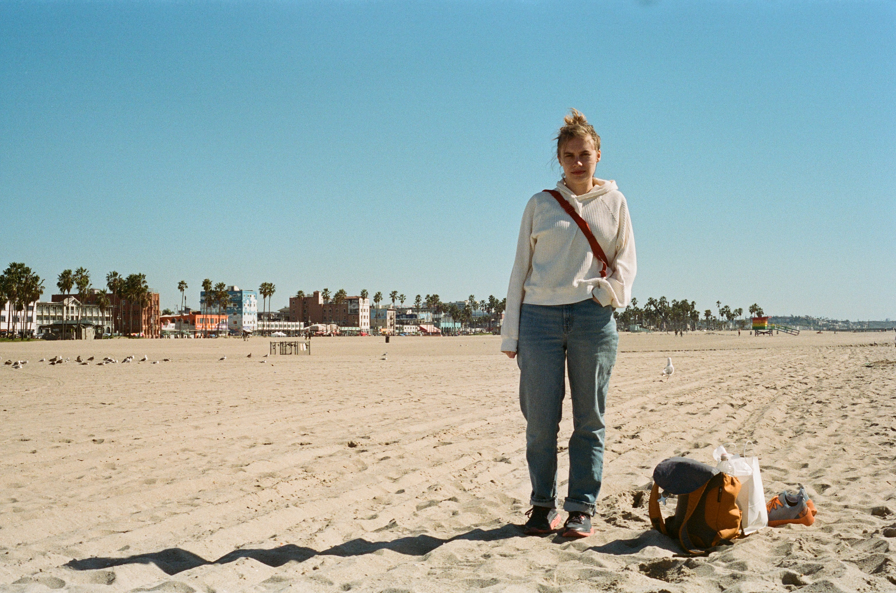

Photography

Film
Here we have a 15th century masterpiece. And if I can manage to scrape a little of it off, we find hidden beneath a 14th century underpiece. This Lurid work is comprised entirely of eggshells.


 


